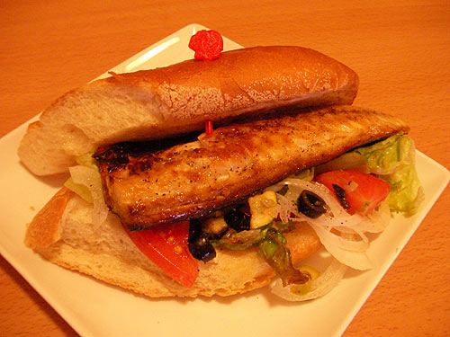
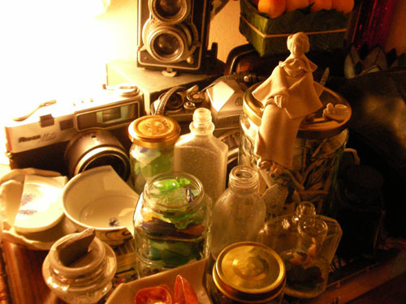
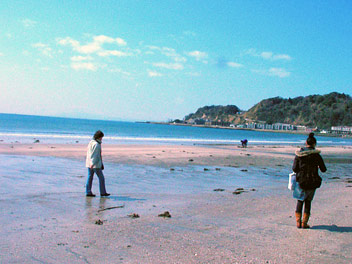
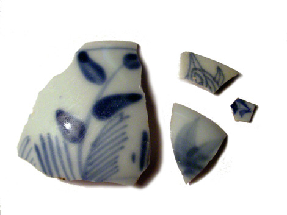

2007年3月 の記事
-
恒例の
年に一度のγ-GTP数値公開。 今年は… 平均値内でした！ う～ん年々減ってます。今年は「節酒」と書かれませんでした。 やっぱし、毎週末浴びるように飲んでいた生活を改めたせいかちら？ というわけ…
-
サバサンド
サバにパン！という衝撃的な組み合わせですが、これが美味しいのです。 去年トルコで食べて、感動したサバサンド。 むしょうに食べたくなって、作ってみましたー。塩サバをオリーブオイル振って香ばしく焼き、たっ…

-
暫定版妖精
我が家の一角。古いカメラとBCで拾ったガラス物、大きめ陶片なんかが転がっています…と、撮影をしたら妖精のお仲間が…というのは冗談で、 ほっかむり奥様の首を転がしておくのがしのびなく、暫定版で胴体作成い…

-
ファミリーBC
先週、最近こんなことしてるんだ～…と、わが母上に陶片の写真をメールしたところ 「私も拾いたい！連れてって！」と。 そんなわけで母＆妹と鎌倉の浜へ。 ちなみに母上の口癖は「うれぴー！」です。 ヒトデ…

-
不思議な陶片
この陶片、実は海で拾ったものではないのです。 で、どこで拾ったかとゆーと、近所の公園。 踏みしめられた土の道にタイルのようにはまっていたのでした。 とはいえ、そんな新しい陶片ではなさそう。 （という…

-
雪！
本日は鎌倉へ。 雪ですよ～！さむーい！！！ （でもなぜか寒中水泳をしている人を見た…パンツいっちょで泳いでたけど…しかも若くはなさそうな感じの男性が…） こないだ来たときには暖かくって…というか暑か…

-
忙しかった
今週は年度末らしい忙しさ。 なので昼は浜に出てました。自転車で5分ぐらいの場所なのです。 浜でお弁当食べて、ちょろっと浜を歩いて陶片さがし。 一週間のうち3日ほど行ってみつけたもの。 見込みに山水図…

-
青山
久しぶりに青山へ。 骨董通りで、あれこれ骨董品を見させていただきました。 実際に完品を見るというのはいい勉強になるかも。 あーこれのこの部分拾った！…というのがとんでもない金額だったり。 そのあと、…

-
煌き
鎌倉で拾った銀化瓶（写真は表裏）。 もってかえって、漂白して、2日乾かしたら煌きだしました。 海の底で煌きを育んでいたのかと思うと、いったいどれだけの時間がこの煌きに重ねられているのかしらん？…と、…

-
魚のめだま
気になっているけどなかなか行けない場所そのいち ここ↓ 上空から見ると魚の目玉のよーな、不思議な池。 ちかくにスパ三日月があるとゆー立地条件も魅力的なのでした。 近々探検予定。

-
野望
3年前に行った、オランダ・デルフトの、とある公園。 デルフト焼のタイルで作られたベンチなのです。 これを陶片で作りたい！…というのが私の野望です。 でも、これを置くような広い庭があるお家を手に入れ…

-
いざ鎌倉そのろく
そのほかに、鎌倉というと桜貝と、宝貝なのでした。 ちょこっと貝溜まりにしゃがみ込んで、お土産に拾ってみました。 でも小さい。爪の先ぐらいのホントーに小さい宝貝。でも生まれてはじめて宝貝を拾ったのでした…

-
いざ鎌倉そのご
びんびんびん…瓶をこんなに拾えるとは思ってもいませんでした。 真ん中にある瓶は、底に「素の味」と書かれていました。どうやら味の素が売り出されたばかりの、明治時代の瓶みたい。 一番奥左手の瓶は銀化してま…

-
いざ鎌倉そのよん
「高砂」と書かれたなんともお目出度いお猪口。 お祝いの席で使われたりしたのかしらん？ どういうわけか、文字の書かれた陶片が好き。でも達筆すぎて読めないことが多いんだけど。

-
いざ鎌倉そのさん
と、歩いていたら、「陶片ですか？」と声をかけられたのでした。 「これをあげましょう」と青磁を！ 鎌倉は青磁が有名なのだけど、どれが青磁がわからなかったので、グッドタイミングで先生あらわる！という感じで…

-
いざ鎌倉そのに
銅版転写、型紙摺り にしても鎌倉の陶片はさまざまな時代まんべんなく陶片があって楽しい。 いつもの近所の浜では「ラッキー！」と思われるものが、そこかしこに。 最初はもう嬉しくって拾いまくり、陶片祭りだ…

-
いざ鎌倉そのいち
陶片素人の私が、幕末以前ではないかと思われる陶片あれこれ。 右上方面にあるやる気のない微塵唐草が好き。

-
にしても
ここ最近は浜歩きしている夢ばかりを見ているのだけど、さすが夢だけあって、陶片がザクザク見つかったり、ガラス瓶がゴロゴロ転がってたりとゆーウハウハな夢ばかり。 でも鎌倉はその夢のよーな場所でしたわ。 詳…

-
海がちがう
大きなサザエが転がってるなー…と思ってひっくり返したら真っ赤なヤドカリが！ なんかちょっと塩茹でにしたら美味しそうなかんじだったけど食べられるのかしらん？

-
本日は遠征
18きっぷで鎌倉まで。

-
心の目で
年に一度の健康診断。 どーゆーわけか、年々視力が良くなってるのですが。 もともとは、右は1.5前後で、左は0.3ぐらいだったのだけど（中学のときは、眼鏡をかけていたぐらいだった）現在は両眼1.0。 …
-
朝あるく
波が荒かったり、雨が降ったり、大潮だったりで、 ちょいと海が気になって出社前に浜歩きしてきました。 朝の海岸歩きって、なんだか余裕のある生活って感じだわ。 それにしても女ひとり海岸歩きは怪しいのか、…

-
まめまつり
貫禄たっぷりなのにいまだに袋物に入るのが大好きな、実家の猫マメ。 まめまつり4月8日 いかねばいかねば …ってウチの実家のマメのことではなく豆本まつりですわ。 豆本作りたいなー。 デジタルなお仕…

-
ウィローパターン
先月欲しいなーとつぶやいていたウィローパターン。 手に入れました。 カップ＆ソーサ。 娘が幽閉されていた楼閣 二人が逃げる小船 橋の上には追っ手の3人 そして鳥となり自由となった2人 デッドストッ…

-
のめん
なぜか飲む気がせず、ここ最近お茶で夜を過ごしております。 飲まないと一日が終わらないここ何年なのに、変な感じ。 チャイグラスに入っているのはチャイではなく麦茶。 お茶うけは「おいり」と「マシュマロ」…

-
大潮でした
いつもなら小さな欠片となってしまった陶片が多い海岸なのに大潮のせいか、大きな陶片と出会いました。 左下は「くらわんか碗」18世紀ごろになるのかな。 「飯食らわんか酒食らわんか」と食べ物飲み物を売って…